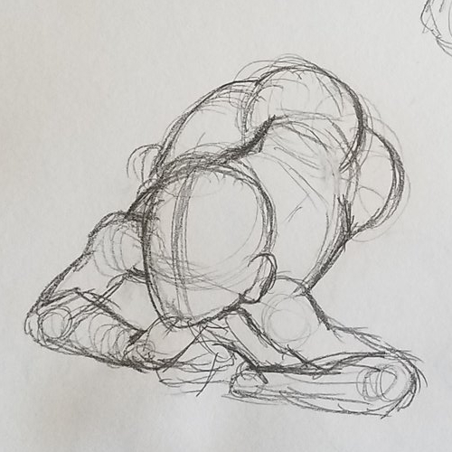

A portfolio is curated. The person making the portfolio puts their best foot forward, only selecting their finest works that they feel are appropriate for the context that the portfolio will be viewed in. But with such a curated, tidy selection of work, the process is often lost. Not everything that a creator considers “portfolio-worthy” reflects the entirety of who an artist is as a person.
This is what The Rest of the Portfolio seeks to represent. This project is a web-based selection of works in progress, unfinished works, practice sketches, and derivative works that would not be featured on a traditional portfolio. By putting on the headphones next to each individual piece that you find in this gallery, you will hear some of the thoughts associated with that piece, rising up above a sea of thoughts about the rest of my work.
A portfolio is curated. The person making the portfolio puts their best foot forward, only selecting their finest works that they feel are appropriate for the context that the portfolio will be viewed in. But with such a curated, tidy selection of work, the process is often lost. Not everything that a creator considers “portfolio-worthy” reflects the entirety of who an artist is as a person.
This is what The Rest of the Portfolio seeks to represent. This project is a web-based selection of works in progress, unfinished works, practice sketches, and derivative works that would not be featured on a traditional portfolio. By putting on the headphones next to each individual piece that you find in this gallery, you will hear some of the thoughts associated with that piece, rising up above a sea of thoughts about the rest of my work.
Alt text is available for those who need it, but I would encourage those who do not need it to experience this piece with alt text off and background voices on for the full effect.


Yeesh. Did I take this too literally?
Does this even count for the prompt?
I am pretty happy with the figurative version, even if it’s not my usual style…
The photo would’ve been way more at home in MA+P, wouldn’t it…
Man, I didn’t even bother cleaning up the background on the photo or anything. Even if I were to take this same photo again with the same concept I’d do it completely differently…
Yeah, these are way too literal. RISD was probably way too traditionally artsy for me.
I am taking this photo to my grave. I mean, I guess I’m not, if I’m gonna use it for thesis. But otherwise, I would.


I need to have studies if I’m gonna apply to art schools. I don’t have studies. I don’t do those. Maybe I can turn into an actual artist real quick?
These don’t look right. Are these right? They’re better than my usual stuff anyway…
This is painful to look at.
I mean, having references is good, but these were definitely not done because I “wanted” to do them…
Girl no, these are not “studies.” These are sketches you threw together to seem legit.


(screaming)
What am I doing. I don’t know what I’m doing—
FUCK. I FUCKED UP THE PAINT. SHIT.
I am finishing my degree in MA+P. I could be doing anything with my life. Instead I’m building an oversized key to pretend to be a video game protagonist. Real intellectual stuff.
Oh shit, this is heavier than I thought it was gonna be. I’m gonna be so buff by the time the con rolls around and I have to carry this thing all day!


Tracing is a good way to learn. Tracing is a good way to learn. Tracing is a good way to learn. I am doing this for learning purposes. I am not cheating. Tracing is a—
Fuck, you can totally see my boobs.
I love my boyfriend…
I have never drawn better clothing folds in my life, nor will I ever draw better clothing folds again.


Hahaaa, I can’t believe I got away with submitting fanart to Champlain.
Hahahahaha…my old art…
Her hands are so TINY in the old one, and her head is so LARGE…
The new one isn’t perfect, but it’s leagues ahead of where I was in fifth grade. I mean, as it should be.
Maybe I can redraw this again and it’ll be even better…
Haha…I submitted fanart to Champlain. Wow.